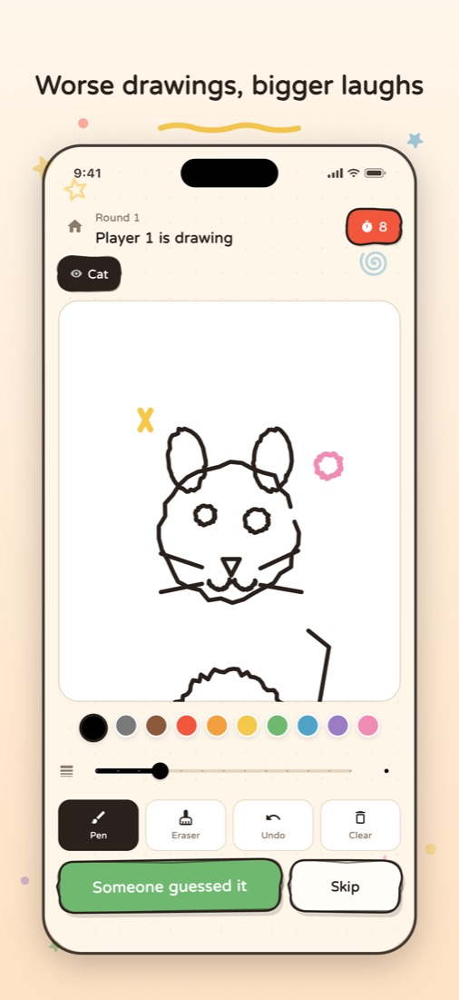

Draw & Guess: the party game you play by passing one phone
One person draws, everyone else guesses — no letters, no talking. Pass the phone around, from classic guessing to telephone chains. Two players are enough, with no internet or account needed.
Free on the App StoreiPhone and iPad (iOS 15 or later) · No Android version yet



Draw & Guess at a glance
- Players
- 2 or more, passing one phone
- Modes
- 7: Classic, Custom Words, Relay Drawing and 4 telephone modes
- Words
- 600+, in easy, medium and hard
- Languages
- 13
- Internet
- Works offline, no account
- Price
- Free, with 20 words per pack to start; full version is a one-time purchase
How to play Draw & Guess
First time? Pick Classic mode with an easy word pack. Draw the key feature — it doesn't need to look good.
Pick a mode and a word pack
Classic, Custom Words, Relay Drawing or a telephone mode — then choose a word pack and difficulty.
Draw the secret word
The artist sees the word and draws on the phone. No letters, no talking — 60 seconds by default.
Guess, then pass the phone
Everyone shouts answers; a correct guess passes the pen on. In telephone modes you replay the whole chain at the end.
Draw & Guess game modes
Beyond the classic “one draws, everyone guesses”, there are several modes for different group sizes — all on one phone:
- ClassicTake turns drawing a random word while everyone else shouts answers.
- Custom WordsPlayers write their own prompts — add your inside jokes.
- Relay DrawingSeveral players each add a stroke or two to the same picture.
- Draw TelephoneDraw, guess, draw again — see what the word turned into.
- Copy TelephoneRedraw the previous player's picture, so it drifts further each pass.
- Draw & Guess TelephoneDrawing and guessing alternate; needs an even number of players (4, 6, 8 or 10).
- Telestrations-styleFull sketchbook rounds — flip through every book at the end.
Every mode ends with a history screen where you can look back at everyone's drawings. Online play is coming later.
Draw & Guess word ideas: easy, medium, hard
A good prompt is easy to draw and easy to guess. These come straight from the app, which includes over 600 words in three difficulty levels.
Easy words
Simple shapes you can sketch in a few strokes — great for kids and first-timers.
- Cat貓
- Apple蘋果
- Umbrella雨傘
- Soccer足球
- Bus公車
- School學校
- Beef Noodle Soup牛肉麵
- Doctor醫生
Medium words
You have to think about how to break the idea down.
- Penguin企鵝
- Dolphin海豚
- Squirrel松鼠
- Hippo河馬
- Whale鯨魚
- Ant螞蟻
- Raccoon浣熊
- Pigeon鴿子
Hard words
Abstract or complicated — both the artist and the guessers have to think.
- Chameleon變色龍
- T-Rex暴龍
- Cheetah獵豹
- Anteater食蟻獸
- Avatar阿凡達
- Beauty and the Beast美女與野獸
3 tips for writing your own words
- Pick something drawable: concrete objects, animals and actions beat abstract ideas.
- Find one key feature: an elephant's trunk, an umbrella's curve — the feature matters more than realism.
- Add your own jokes: nicknames, office in-jokes, classroom legends — enter them in Custom Words.
When to play
Parties, family dinners, holidays, team events, orientation, camps, class activities, camping nights — even while waiting for a ride. No pen, paper or whiteboard needed: one phone passed around is enough, and it works offline.
Price
Free to download, with 20 words per pack to start. The full version is a one-time purchase that unlocks every word and removes ads. Switching phones? Tap “Restore Purchases” in the app.
Frequently asked questions
How do you play Draw & Guess?
One player draws a secret word on the phone — no letters, no talking — and everyone else tries to guess it before time runs out. Pass the phone to the next artist after each round. The default round is 60 seconds.
Does it need internet or an account?
No. One phone passed around the table is all you need — no sign-up, no connection.
How many words are included?
Over 600 words across animals, food & drinks, everyday objects, vehicles, movies & cartoons, jobs, places, sports and local packs. Each pack has easy, medium and hard words; a sample is listed below on this page.
Can I write my own words?
Yes. Custom Words mode lets players enter their own prompts — perfect for inside jokes with friends, family or coworkers.
Can two people play?
Yes — take turns drawing and guessing. For bigger groups, Relay Drawing and the telephone-style modes get funnier with more people.
I can't draw. Is it still fun?
It's better that way. The telephone modes (Draw Telephone, Copy Telephone, Draw & Guess Telephone, Telestrations-style) run on wobbly drawings and wrong guesses, then reveal the whole chain at the end.
What is the telephone mode?
The first player writes or draws a prompt, the next player only sees the previous result and draws or guesses from it, and so on. At the end you replay the chain and see where it all went wrong. Draw & Guess Telephone needs an even number of players: 4, 6, 8 or 10.
Is the app free?
Free to download with 20 words per pack to start. The full version is a one-time purchase that unlocks every word and removes ads.
Is there an Android or web version?
Currently iPhone and iPad only (iOS 15 or later). There is no web version. Online play is planned.
More apps by H.C
- Who's the Spy?A pass-the-phone party game of bluffing and deduction.
- CharadesPhone on your forehead while friends act it out.
- Truth or DareSpin to pick a player, with 2,000+ truths and dares.